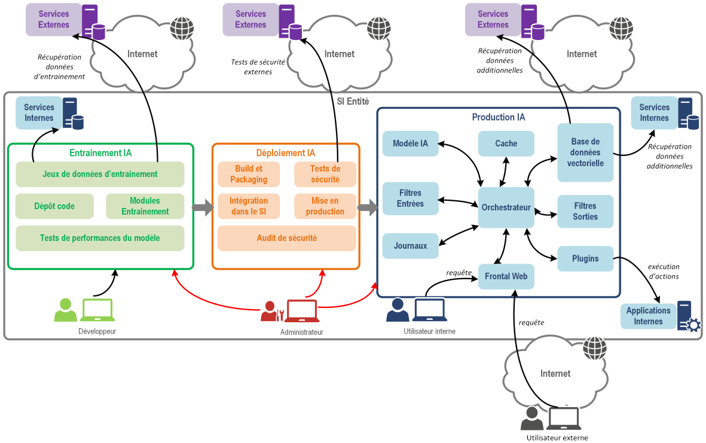

PARTIE III. Deploiements
4. Infras dispos pour l’administration (Thibault Katia)
Dans beaucoup de cas l’accès à des GPUs est un des principaux freins à l’expérimentaion et la mise en production d’un cas d’usage d’IA générative. L’acquisition d’un cluster GPUs n’est pas toujours une possibilité pour des questions budgétaires ou techniques. Cependant, plusieurs alternatives sont envisageables (ou en cours de construction) à destination des administrations pour externaliser cette infrastructure.
Cette approche est d’ailleurs en phase avec la directive “cloud au centre” qui encourage l’utilisation d’infrastructure externalisée pour les projets informatiques de l’administration.
Dans ce cadre, la principale variable a prendre en compte sont les contraintes de sécurité de l’application. Cette question va à la fois déterminer les solutions accessibles et imposer des choix architecturaux. Un exemple d’architecture d’application d’IA générative est donné dans le rapport de l’ANSSI sur l’IA générative :

Tout ou parti de ces éléments peuvent être externalisé en fonction de la maturité de l’administration, du besoin utilisateur et des contraintes de sécurité.
3 principales solutions d’externalisation sont possibles :
A. Cloud Public
Bien que l’état dispose de plusieurs offres cloud internes, la mise à disposition de GPU est encore très peu mature et peu développée
SSP Cloud : A ce jour, le SSP Cloud via sa plateforme ONYXIA (hébergée et dévelopée par l’INSEE), est la principale plateforme publique mettant à disposition des GPUs à ses utilisateurs. Les ressources sont cependant très limitées et la plateforme est plus orientée autour du développement de projet que de la mise en production. cf Déploiement d’un LLM sur SSP Cloud
Cloud pi : Cloud PI est le cloud du ministère de l’intérieur, il ne semble pas proposer à date de provisionnement de GPUs. Il fournit cependant une offre IAAS et PAAS pour l’hébergement d’applications.
Nubo : Nubo est le service cloud du ministère de l’économie et des finances, qui propose un service IAAS. Via sa solution Nubonyxia (implémentation d’Onyxia sur les infrastructures Nubo), il
Pour définition de ce que recouvre les offres de service PAAS et IAAS, se référer à ce lien
B. Cloud externe
La qualificiation SecNumCloud a été mis en place par l’ANSSI pour assurer des normes de sécurité aux utilisateurs de produits cloud. A ce jour, peu d’entreprises ont acquis cette qualification. Voici quelques exemples de fournisseurs :
- Dassault - Outscale IAAS avec accès GPU
- Thales - Sens (Implémentation de GCP sur une infrastructure sécurisée) PAAS
- Cloud Temple IAAS
Plus d’informations sur ce type de services sont disponibles ici.
C. API inférence
- API Albert : Offre fourni à quelques partenaires de la DINUM, avec des capacités d’hébergement limitées. > (ajouter contact ou moyen d’accès)
- Externe non sécurisée : Ces solutions sont envisageables où les besoins en performance sont importants et les contraintes de sécurité sont faibles. Voici quelques exemples de solutions :
Dans certains cas, il peut être aussi intéressant de mettre en place une architecture hybride Cloud + API d’inférence. Ce qui permet de bénéficier de l’agilité de développement des solutions Cloud, tout en limitant les coûts relatifs à l’approvisionnement de GPUs.
5. Déploiement d’un LLM sur SSP Cloud
Sur le DataLab SSP Cloud, il est possible de déployer des LLM à des fins d’expérimentation. Plusieurs cas sont possibles :
A. Utiliser des librairies d’API de LLM (vLLM, etc.) B. Déployer des containers Docker avec Kube et Helm
A. Déploiement par API
- Vous pouvez lancer un service VSCode avec une GPU et installer une API de LLM
B. Déploiement par image Docker
- Créer une image Docker et la mettre à disposition (Dockerhub) : exemple applicatif avec Streamlit
- Déployer avec Kube et Helm en utilisant un service VSCode avec les droits d’admin pour Kube
Exemple avec Kube :
kubectl create deployment mon-deploiement --image=mon-image-dockerkubectl proxy